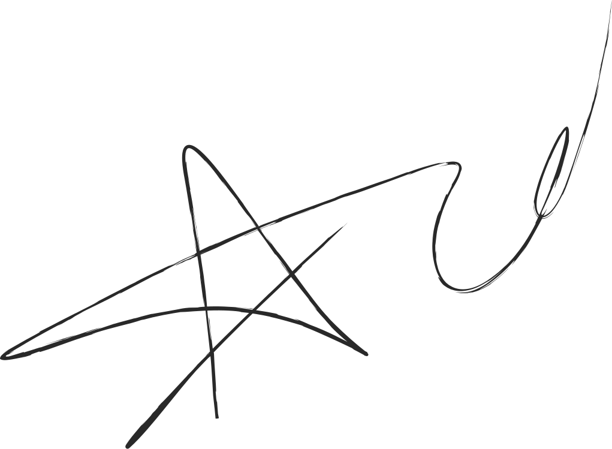
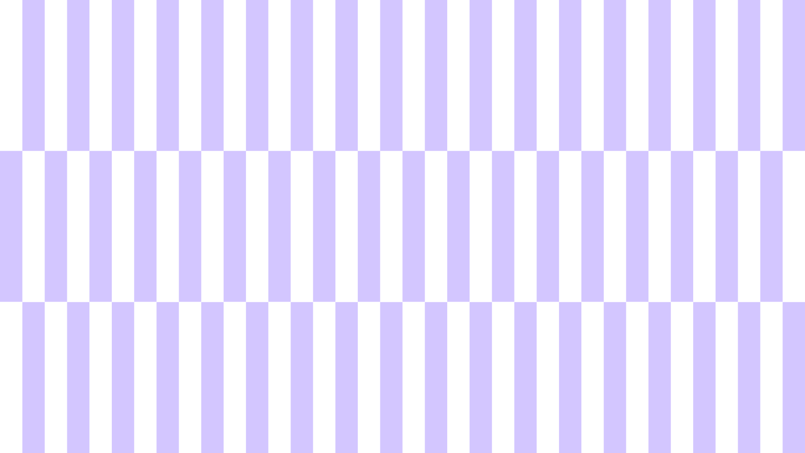
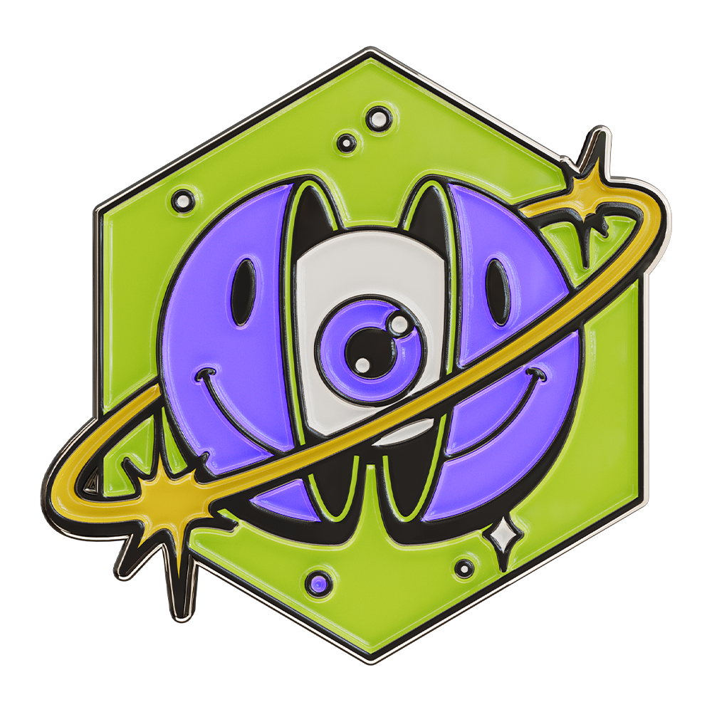

365 ДНЕЙ
Музыка сопровождала тебя весь год — в дороге, дома, на учёбе, в поездках и важных моментах.
Так рождается твой wrapped!
За год мы слушаем сотни песен: на прогулке, в дороге, дома или на учёбе. Обычно мы не замечаем, как из этих прослушиваний складывается наш музыкальный год. В декабре Spotify собирает их в одну персональную историю — Wrapped.
В 2015 году Spotify впервые представил персональные музыкальные итоги, а уже в 2016 появился Wrapped. Постепенно обычная статистика превратилась в яркую интерактивную историю, которой пользователи могли делиться в социальных сетях.
С каждым годом проект становился всё более персональным: появились музыкальные типы личности, анализ настроения, необычные категории и новые способы визуализации данных. К 2025 году Wrapped превратился в масштабное ежегодное событие, объединяющее миллионы слушателей по всему миру. Теперь это не статистика, а цифровой портрет человека, рассказанный через музыку.
“Из цифр в историю года”
4
В течение года Spotify анализирует твою историю прослушиваний: любимые треки, исполнителей, жанры и количество минут с музыкой. Затем эти данные объединяются в персональный итог. Поэтому каждый Wrapped получается своим и отражает музыкальные привычки конкретного пользователя.

Сами по себе минуты, проценты и списки артистов выглядят как обычная статистика. Wrapped превращает их в яркие карточки с крупной типографикой, графикой, цветом и движением. Благодаря дизайну цифры становятся частью визуальной истории.

За год мы слушаем сотни песен: на прогулке, в дороге, дома или на учёбе. Обычно мы не замечаем, как из этих прослушиваний складывается наш музыкальный год. В декабре Spotify собирает их в одну персональную историю — Wrapped.
%
ты в числе главных слушателей
Музыкальные итоги становятся простым способом рассказать о себе другим. Любимый артист, главный трек года или попадание в 1% слушателей воспринимаются как что-то личное. А готовый визуальный формат позволяет сразу поделиться результатом в соцсетях.
Wrapped видит, что ты слушал, но не знает, почему эта музыка была важна именно тебе.
Данные: треки, минуты, жанры
За кадром: эмоции, люди, моменты

За каждой песней могут оставаться люди, места, события и воспоминания, которых нет в статистике Spotify. Сервис способен посчитать минуты и определить любимый трек, но личный смысл музыке придаём мы сами. Поэтому Wrapped становится не просто итогом, а историей года.
Твой главный итог
Твой год